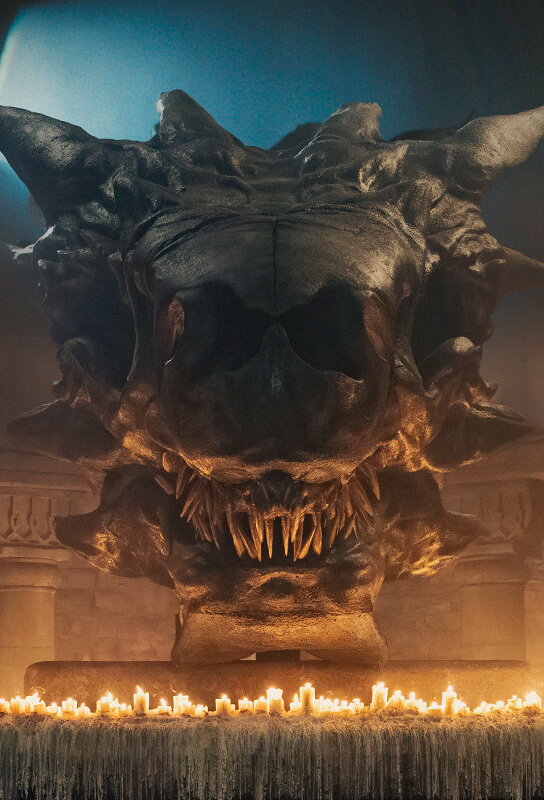

Dragões
Balerion
Conhecido como o Terror Negro, foi o dragão de Aegon, o Conquistador, e mais tarde de Viserys. Já morreu antes da história atual; seu crânio é preservado em Porto Real.
Conteúdo até a temporada 1, episódio 10.
Ver Mapa de Conexões →HISTÓRICO DO PERSONAGEM
Temporada 1
Acompanhe os acontecimentos registrados até o episódio escolhido.
Episódio 01 — The Heirs of the Dragon
Conhecido como o Terror Negro, foi o dragão de Aegon, o Conquistador, e mais tarde de Viserys. Já morreu antes da história atual; seu crânio é preservado em Porto Real.
Personagens relacionados
- Viserys I TargaryenÚltimo cavaleiro, no passado